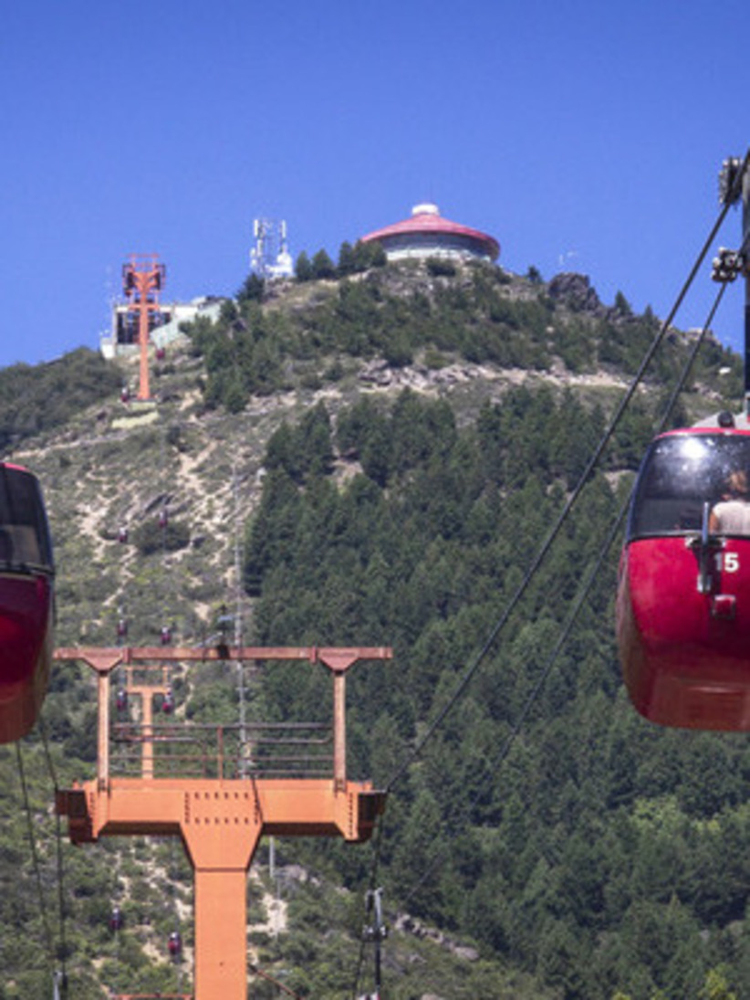
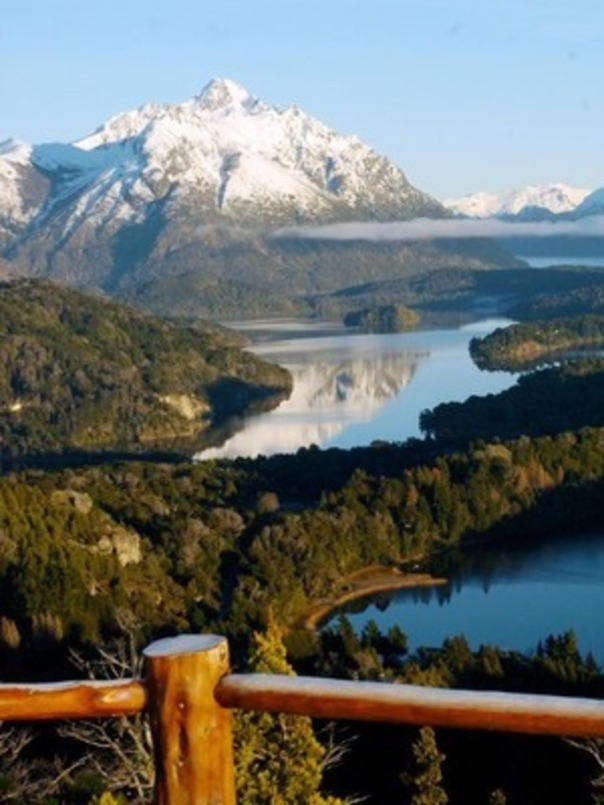
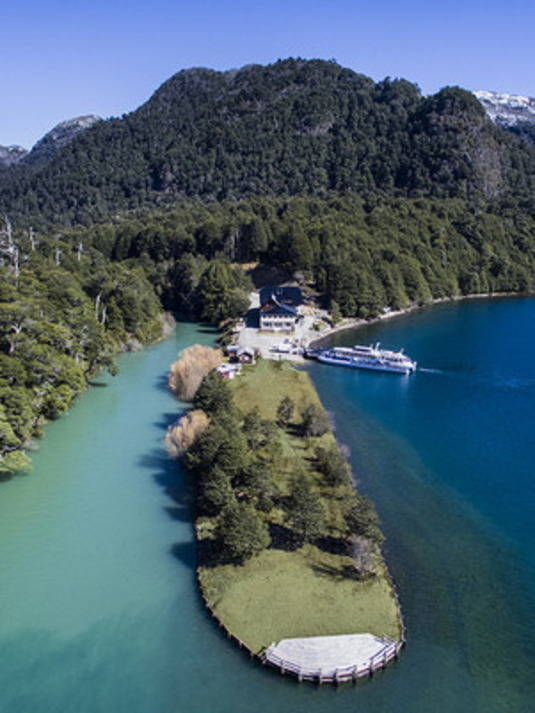
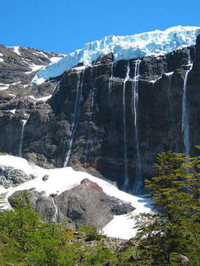
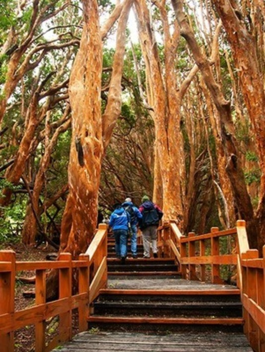

Otto Hill
At the Cerro Otto Cable Car Tourist Complex, nature lovers will find countless reasons to spend an unforgettable day. Full of incomparable treasures for the senses, the place offers visitors impressive natural spectacles 365 days a year. Each season with its particular charm and varied activities for the family make this complex the traditional excursion par excellence in San Carlos de Bariloche. Mountains; lakes; forests and incredible skies make this place a true earthly paradise. Its activities, different depending on the time of year, also allow you to have fun in perfect harmony with nature.
Campanario Hill
Our activity takes place in a privileged natural environment and it is our mission to ensure that the visitor can best experience one of the most complete and magnificent views of the area. That is why we must manage to convey the importance of respect for the environment, make the past known and how to ensure that future generations can continue to be surprised by these natural beauties in the future.
Port Blest
Navigate the most important arm of Lake Nahuel Huapi and discover jungles, waterfalls, mountains and lakes of unique colors. Get ready to live an unforgettable experience in port blest.
Tronador Hill
Tronador is a geologically active volcano, its last eruption is unknown, although it is thought to have occurred more than 10,000 years ago, for which reason it would be in the process of erosion. It is located in the southern part of the Andes Mountains, on the border between Chile and Argentina. It separates two national parks: Vicente Pérez Rosales in the province of Llanquihue, Chile, and Nahuel Huapi, in Río Negro and Neuquén, Argentina. The name of the hill is due to the noise similar to that of thunder produced by the frequent landslides and falls of large blocks of ice fragmented by important cracks in its glaciers. El Tronador has a total of 7 glaciers, some of which you will be able to see on this excursion. It is a full day excursion. It shows us the most beautiful areas of the Nahuel Huapi National Park: visiting lakes, beaches, mountains and waterfalls, being able to visualize this hill that is the highest in the area, 3,478 meters. From a viewpoint located at its base you can get an unbeatable view of the Manso River glacier. On this excursion you will be able to see the Black Snowdrift, which is a glacier with huge brownish blocks formed by avalanches of ice and mud; Devil's Throat, a meltwater waterfall surrounded by towering rock faces; among other several typical beauties of the place. We recommend it to be part of a unique experience, surrounded by beauties that you will keep forever in your memory.
Arrayanes National Park
Los Arrayanes National Park was created in 1971, covers the entire Quetrihué Peninsula with an area of ​​1,840 hectares, south of the Province of Neuquén, 12 km. from Villa la Angostura, on the northern shore of Lake Nahuel Huapi. The name was given by its former owner, Dr. Antonio Lynch, who discovered the Arrayanes Forest at its end. He donated it to National Parks, except for the area of ​​the helmet that the heirs still keep as a symbol of the first colonizations in Patagonia.